Lattice MXO2-4000HC >> V2.2 >> Verilog
LED
參考資訊：
1. basic
司徒還記得第一次接觸FPGA是在學生時期，對於習慣寫單晶片的司徒來說，還真是一門難懂的課程，畢竟單晶片是一種有序執行的單元，而FPGA則不是，司徒還記得上課老師說過的話：FPGA是在寫硬體，需要使用平行的思考邏輯。這是一段深奧的描述，尤其是對於寫慣有序執行的人來說，後來司徒想了又想，發現或許可以把FPGA想像成多個CPU或者多個執行緒的單體來看待，每個FPGA的副程式描述都是一個CPU或者一個執行緒，這樣或許會比較好理解，而說到FPGA用途，可以發現最常作為ASIC用途，畢竟彈性規劃和貼近硬體執行還是其強項，當然，使用FPGA刻出單晶片也是時有所聞的事情，就像目前流行的ARM加上FPGA的架構，就是一個很適合多種情境下的使用架構，還有就是RISC-V CPU，由於目前市面上為數不多，因此，很多專案還是使用FPGA模擬，FPGA扮演的角色實為一個越來越重要的關鍵，因此，司徒想說可以寫一下這系列的教學，而最基本LED練習就是這次的主題。
FPGA可以使用多種方式製作，司徒習慣以程式方式建構，因此，有Verilog和VHDL兩種程式語言可以選擇，看個人習慣使用，如果習慣C語言，那Verilog是比較適合的選擇，反之，習慣Pascal語言的話，可以使用VHDL語言，多學總是有益身心健康，因此，不用有任何侷限，目前司徒使用STEP小脚丫Lattice XO2-4000HC當作教學使用，因為這個FPGA開發板真的很迷你小巧，價格也很親民，接著司徒就說明一下如何點亮LED，過程說明如下。
新增專案
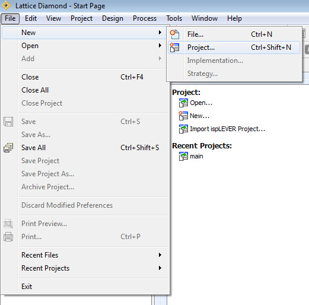
專案名稱
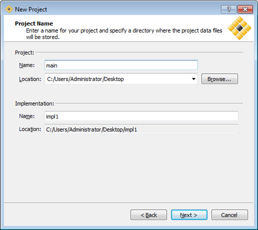
Next
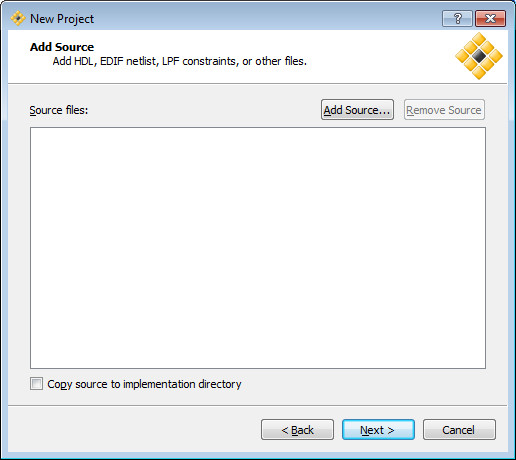
LCMX02-4000HC、CSGBA132
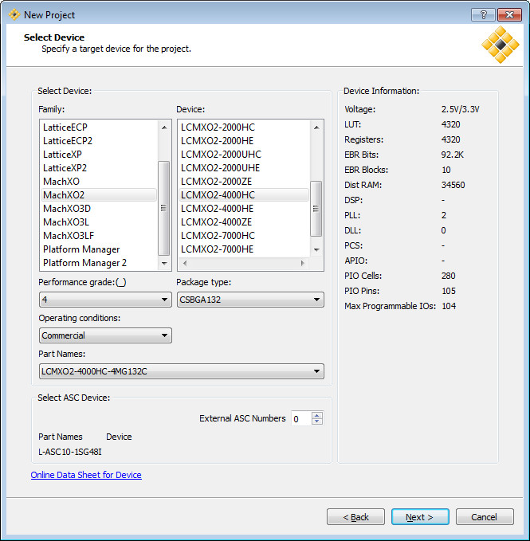
Next
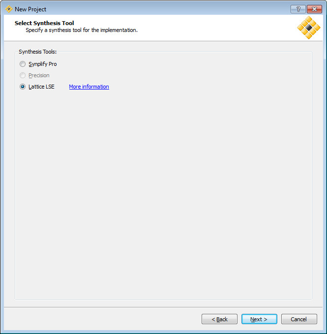
專案建立完成
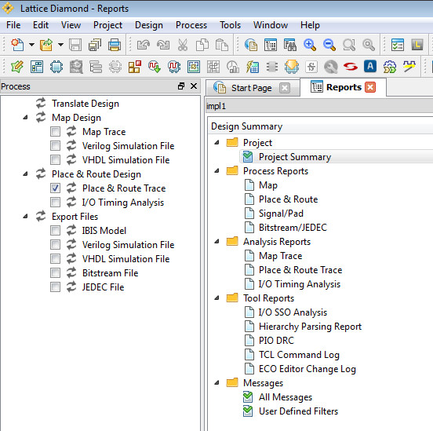
接著新增Verilog檔案
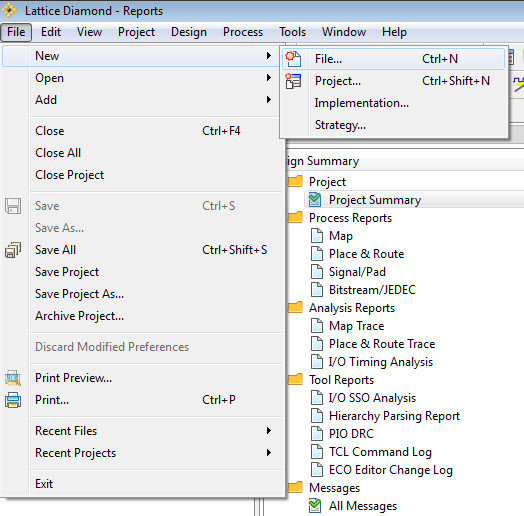
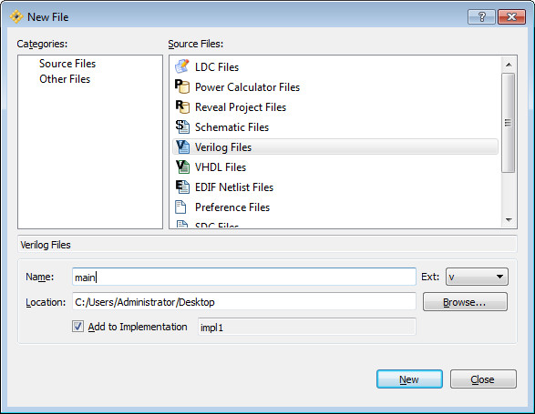
程式如下：
module main( input btn, output reg led ); always @(btn) led<= btn; endmodule
btn輸入就當做led輸出
用滑鼠點擊Synthesize Design

接著要指定btn和led腳位(是不是有在寫硬體的感覺了?)
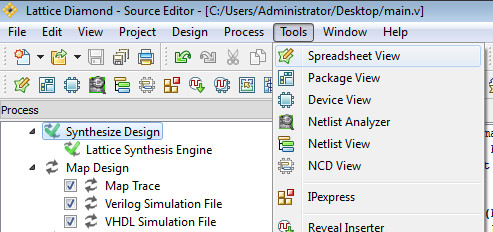
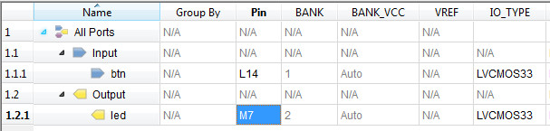
在左邊的Process Tab裡面，把所有項目句選
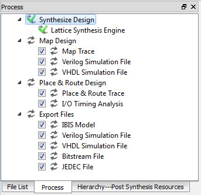
使用滑鼠雙擊Export Files
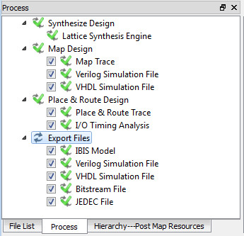
接著插入FPGA開發板並且確認電腦可以正確識別，如錯誤，記得安裝驅動程式

開啟燒錄頁面
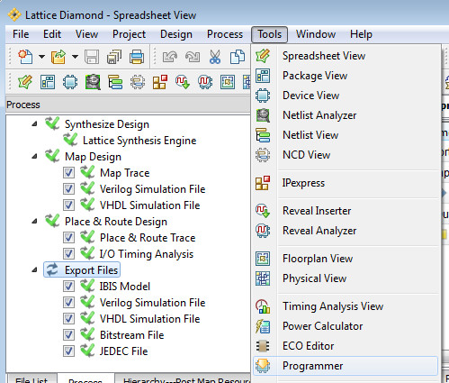

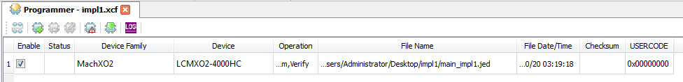
燒錄
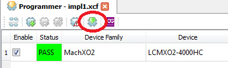
完成
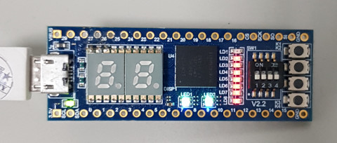
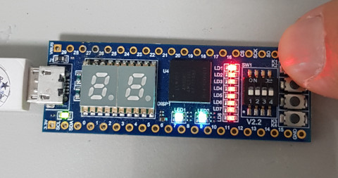